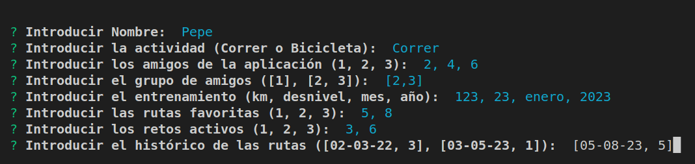
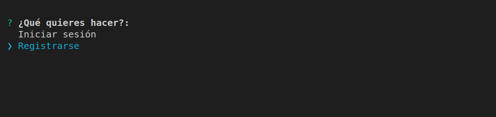
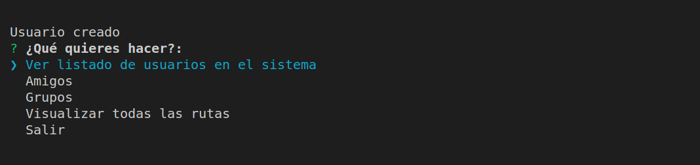

dsi-prct07-grupal-destravate
Práctica 7 - DeStravaTe


Índice
Introducción
En esta práctica grupal se requiere del desarrollo de un programa que englobe una serie de conceptos como son unos usuarios, grupos, rutas y retos, todos ellos relacionados entre sí. Los grupos estarán compuestos por usuarios, los usuarios serán miembros de grupos, los retos y las rutas serán realiadas por los distintos usuarios, entre otras relaciones.
Se introducirán conceptos nuevos sobre interfaces interactivas y almacenamiento y gestión de conjuntos de información. Además, se exige la utilización de elementos ya conocidos como TypeDoc, la metodología TDD o BDD, los principios SOLID y el cubrimiento de código con Coveralls.
Implementación
Hemos estructurado el proyecto en una serie de carpetas de trabajo que nos permiten trabajar y visualizar el conjunto del programa de manera más ordenada. Teniendo en cuenta ésto las carpetas se estructuran de la siguiente forma:
Usuarios
En el directorio Usuarios se encuentran cuatro ficheros:
usuario.ts
Para esta práctica se crea una clase llamada Usuario que se encuentra en el fichero usuario.ts. Esta clase contiene los siguientes atributos:
private _ID: number; // ID único del usuario
private _nombre: string; // Nombre propio de usuario
private _actividades: Actividad; // Tipo de actividad; correr o bicicleta
private _amigosApp: number[]; // Colleción de IDs de usuarios con los que se interacciona
private _grupoAmigos: Coleccion; // Diferentes colecciones de IDs de usuarios con los que suele realizar rutas
private _entrenamiento: EstadisticasEntrenamiento; // Cantidad de km y desnivel total acumulados en la semana, mes y año
private _rutasFavoritas: number[]; // Colección de IDs de las rutas que el usuario ha realizado con mayor frecuencia
private _retosActivos: number[]; // Colección de IDs de los retos que el usuario está realizando actualmente
private _historicoRutas: HistoricoRuta[]; // Colección del historial de rutas realizadas
Los métodos de la clase son los respectivos getters y setters, una función de mostrarUsuario (muestra todos los atributos con su valor), añadir amigo, que consiste en añadir el Array AmigoApp (Amigos en la aplicación) el ID de otro usuario existente, y quitar amigo, que consiste en eliminarlo.
usuarioColeccion.ts
Este fichero posee una clase que almacena varios elementos de la clase Usuario. Otro atributo que posee es el parametro _ultID, que consiste en guarda el ID registrado y sumarle itereadamente 1, para dar a los distintos usuarios un único ID y de manera ordenada. A su vez, en este fichero se encuentran enumerados como AtributosUsuario que muestra como se pondrían los atributos de usuario. También existen clase que ayudan a modificar el array de Usuario como insertarUsuario, añade Usuario a Array; borrarUsuario, se elimina Usuario del array; modificarUsuario, que cambia las entradas a los atributos de la clase; buscarUsuarios, retorna los usuarios correspondientes a una colección de IDs; devolverIndexUsuario, obtiene la posición en el array de la clase; añadirAmigos, añade un amigo a un usuario; borrarAmigo, elimina un amigo a un usuario; mostrarUsuario, muestra una serie de atributos de un usuario de la colección; y, por último, existeUsuario, verifica si el usuario pertenece a la colección.
jsonUsuarioColeccion.ts
Este fichero posee la clase que interactúa con el fichero JSON, JsonUsuarioColeccion. Esta clase sirve para guardar la información de los Usuarios. A su vez, también se encuentra el esquema de la Base de Datos para Usuario:
type schemaUsuarios = {
usuario: {
_ID: number;
_nombre: string;
_actividades: Actividad;
_amigosApp: number[];
_grupoAmigos: Coleccion;
_entrenamiento: EstadisticasEntrenamiento;
_rutasFavoritas: number[];
_retosActivos: number[];
_historicoRutas: HistoricoRuta[];
}[];
};
Y dentro de la clase JsonUsuarioColeccion se encuentra el constructor, y los siguientes métodos:
addUsuario: Método para insertar un usuario a la colección
addUsuario(nombre: string, actividades: Actividad, amigosApp: number[],
grupoAmigos: Coleccion, entrenamiento: EstadisticasEntrenamiento, rutasFavoritas: number[],
retosActivos: number[], historicoRutas: HistoricoRuta[]) {
super.insertarUsuario(nombre, actividades, amigosApp, grupoAmigos, entrenamiento, rutasFavoritas, retosActivos, historicoRutas);
this.storeTasks();
}
removeUsuario: Método para eliminar un usuario de la colección
removeUsuario(ID: number): boolean {
let borro: boolean = super.borrarUsuario(ID);
this.storeTasks();
return borro;
}
modifyUsuario: Método para modificar un atributo de un usuario de la colección
modifyUsuario(ID: number, atributoModificar: string, nuevoAtributo: string): boolean {
let modifico: boolean = super.modificarUsuario(ID, atributoModificar, nuevoAtributo);
this.storeTasks();
return modifico;
}
showUsuario: Método para mostrar una serie de atributos de un usuario de la colección
showUsuario(ordenacion: string, orientacion: string): boolean {
let muestro: boolean = super.mostrarUsuarios(ordenacion, orientacion);
return muestro;
}
addAmigo: Método para añadir un amigo a un usuario
addAmigo(ID_usuario : number, ID_amigo : number) {
super.anadirAmigo(ID_usuario, ID_amigo);
this.storeTasks();
}
removeAmigo: Método para eliminar un amigo a un usuario
removeAmigo(ID_usuario : number, ID_amigo : number) {
super.borrarAmigo(ID_usuario, ID_amigo);
this.storeTasks();
}
storeTasks: Método privado para actualizar los valores del fichero JSON, con los de la colección
private storeTasks() {
this.database.set("usuario", [...this._usuarios.values()]).write();
}
usuarioPrompt.ts
Contiene una serie de funciones para trabajar con las distintas opciones posibles del prompt (empleando inquirer), relacionadas con los usuarios.
En este fichero se encuentra el enumerado AtributosOrdenacionUsuario que consiste en las distintas opciones por las que se puede ordenar usuarios, por el nombre del Usuario o por los kilometros totales en función de la semana actual, mes o año; la función asíncrona insertarUsuarioPrompt que sirve para insertar un elemento Usuario; la función asíncrona eliminarUsuarioPrompt que sirve para eliminar un elemento Usuario; la función asíncrona modificarUsuarioPrompt que sirve para modificar un determinado elemento Usuario; la función asíncrona mostrarUsuarioPrompt que sirve para enseñar un elemento Usuario; y por último, promptUsuarios que es el prompt principal de Usuarios.
Grupos
En el directorio Grupos se encuentran cuatro ficheros:
grupo.ts
Alberga la clase Grupo con los siguientes atributos:
private _ID: number; // ID para identificar al grupo.
private _nombre: string; // nombre del grupo.
private _participantes: number[]; // alberga las IDs de los integrantes del grupo.
private _estadisticasEntrenamiento: EstadisticasEntrenamiento; // las estadísticas de entrenamiento del grupo.
private _clasificacion: Usuario[]; // la clasificación de los distintos usuarios que conforman el grupo.
private _rutasFavoritas: number[]; // el ID de las rutas favoritas
private _historicoRutas: HistoricoRuta[]; // el histórico de las rutas del grupo
private _administrador: number; // la ID del administrador del grupo, es decir, quién fue el qué lo creó.
Esta clase contiene todo lo necesario para gestionar un grupo.
Contiene getters y setters para cada uno de los atributos de la clase. Respecto a las funciones, mostrarGrupo permite mostrar los valores de los atributos de la clase; incluirUsuario permite añadir un usuario al grupo, es decir, la ID del usuario en cuestión.
grupoColeccion.ts
Contiene la clase GrupoColeccion y sus atributos:
protected _grupos : Grupo[], el array con los distintos grupos de la colección.protected _ultID : number, el último ID que se ha asignado.
El atributo _ultID se requiere debido a que los IDs de los grupos se asignan de forma automática y correlativa, es decir, se empieza por la ID número cero.
Respecto a las funciones, insertarGrupo permite insertar un grupo a la colección de grupos de la clase; devolverIndexGrupo permite devolver la posición del vector en la que se encuentra un grupo con la ID introducida (number); anadirUsuario posibilita que un usuario sea añadido a un grupo concreto, recibiendo, por tanto, tanto la ID del usuario como la del grupo; borrarGrupo recibe la ID del grupo y procede a su eliminación en la colección; modificarGrupo permite modificar alguno de los parámetros del grupo, a elección del usuario que introduce cuál es el atributo a modificar y el nuevo atributo que desea establecer en sustitución; buscarGrupos es un método para retornar los Grupos correspondientes a una colección de IDs; mostrarGrupos muestra una serie de atributos de un grupo de la colección, teniendo en cuenta factores de ordenación, es decir, si se desea ordenar de manera ascendente o descendente; existeGrupo verifica a través de una ID si dicho grupo existe o no; y buscarAdministrador retornar el ID del administrador de un grupo, recibiendo la ID del mismo y retornando la ID del usuario administrado.
jsonGrupoColeccion.ts
Este fichero posee la clase que interactúa con el fichero JSON, JsonGrupoColeccion. Esta clase sirve para guardar la información de los grupos. A su vez, también se encuentra el esquema de la Base de Datos para Grupo (lowdb):
type schemaGrupos = {
grupo: {
_ID: number;
_nombre: string;
_participantes: number[];
_estadisticasEntrenamiento: EstadisticasEntrenamiento;
_clasificacion: Usuario[];
_rutasFavoritas: number[];
_historicoRutas: HistoricoRuta[];
_administrador: number;
}[];
};
Y dentro de la clase JsonGrupoColeccion se encuentra el constructor, y los siguientes métodos:
addGrupo: Método para insertar un grupo a la colección
addGrupo(nombre : string, participantes : number[], estadisticasEntrenamiento : EstadisticasEntrenamiento,
clasificacion : Usuario[], rutasFavoritas : number[], historicoRutas : HistoricoRuta[], adminID: number = 0) {
super.insertarGrupo(nombre, participantes, estadisticasEntrenamiento, clasificacion, rutasFavoritas, historicoRutas, adminID);
this.storeTasks();
}
removeGrupo: Método para elimnar un grupo a la colección
removeGrupo(ID: number): boolean {
let borro: boolean = super.borrarGrupo(ID);
this.storeTasks();
return borro;
}
modifyGrupo: Método para modificar un grupo a la colección
modifyGrupo(ID: number, atributoModificar: string, nuevoAtributo: string): boolean {
let modifico: boolean = super.modificarGrupo(ID, atributoModificar, nuevoAtributo);
this.storeTasks();
return modifico;
}
showGrupo: Método para mostrar un grupo a la colección
showGrupo(ordenacion: string, orientacion: string): boolean {
let muestro: boolean = super.mostrarGrupos(ordenacion, orientacion);
return muestro;
}
addUsuario: Método para añadir un usuario a la colección
addUsuario(ID_grupo : number, ID_usuario : number) {
super.anadirUsuario(ID_grupo, ID_usuario);
this.storeTasks();
}
storeTasks: Método privado para actualizar los valores del fichero JSON, con los de la colección
private storeTasks() {
this.database.set("usuario", [...this._usuarios.values()]).write();
}
grupoPrompt.ts
Contiene una serie de funciones para trabajar con las distintas opciones posibles del prompt (empleando inquirer), relacionadas con los grupos.
Dichas funciones son las siguientes: insertarGrupoPrompt solicita los datos uno a uno para insertar un grupo, es decir, añadirlo a la clase GrupoColeccion; eliminarGrupoPrompt solicita el ID del grupo a eliminar y procede a su eliminación; modificarGrupoPrompt para modificar un determinado elemento, que es indicado por el usuario; mostrarGrupoPrompt para mostrar los grupos según unos criterios de ordenación introducido en las opciones; Por último, promptGrupos, que se encarga de gestionar todas las posibilidades dentro de grupos, es decir, las funciones anteriomente comentadas que permiten modificar, visualizar, añadir y eliminar grupos.
Se hace uso de funciones de la clase JsonGrupoColeccion para llevar a cabo las tareas como eliminar, incluir o mostrar usuarios.
Las funciones que reciben como parámetro la ID del administrador del grupo lo hacen para garantizar que es el propietario de dicho grupo, en caso de que no lo sea no podría realizar cambios. Algunas funciones para finalizar su ejecucción llaman a la función prompt principal, es decir, al menú inicial.
Rutas
En el directorio Rutas se encuentran al igual que en los anteriores cuatro ficheros:
ruta.ts
Para esta práctica se crea una clase llamada ruta que se encuentra en el fichero ruta.ts. Esta clase contiene los siguientes atributos:
private _ID: number; // ID único de la ruta.
private _nombre: string; // Nombre de la ruta.
private _geolocalizacionInicio: Coordenada; // Geolocalización del inicio (coordenadas).
private _geolocalizacionFinal: Coordenada; // Geolocalización del final de la ruta (coordenadas).
private _longitud: number; // Longitud de la ruta en kilómetros.
private _desnivelMedio: number; // Desnivel medio de la ruta.
private _usuariosRealizaron: number[]; // Usuarios que han realizado la ruta (IDs).
private _tipoActividad: Actividad; // Tipo de actividad: Indicador si la ruta se puede realizar en bicicleta o corriendo.
private _calificacionMedia: number; // Calificación media de la ruta.
Los métodos de la clase son los respectivos getters y setters y una función de mostrarRuta, que muestra todos los atributos con su valor.
rutaColeccion.ts
Este fichero almacena la clase RutaColeccion que almacena un array de varios elementos de la clase Ruta. Otro atributo que posee es el parametro _ultID, que consiste en guarda el último ID registrado y sumarle itereadamente 1 a la hora de crear una nueva ruta. Como el resto de colecciones, la rutas se deben poder mostrar, crear, modificar y eliminar por ello definimos los siguientes métodos:
insertarRuta(): Este método recibirá todos los atributos necesarios para instanciar un nuevo objeto Ruta, menos el ID, que lo obtiene del atributo _ultID, y con todos los datos crea una nueva Ruta y la inserta en la colección.
borrarRuta(): Este método permite borrar una ruta de la colección, a partir del ID de la Ruta a eliminar. Para ello recorre la colección de rutas y si el ID introducido por parametro coincide con el de la Ruta, pues entonces guarda la posición en el vector, para despues eliminar el elemento con splice().
modificarRuta(): Este método recibe el ID de la ruta a modificar, una string con el nombre del atributo a eliminar, y otra string con el nuevo valor del atributo. Para modificar el atributo, primero busca la ruta que es con el ID, y a continuación, en un switch-case segun el atributo que sea, lo modifica con el nuevo valor.
mostrarRuta(): Este método permite mostrar todas las rutas del sistema ordenadas según ciertos atributos. Para ello recibe dos cadenas con el atributo por el que ordenar y el orden de ordenación, ascendente o descendente, y con un switch-case, según el atributo y la ordenación introducidas, ordena la colección con el método sort().
En esta clase tambien definimos un método para retornar las Rutas correspondientes a una colección de IDs, buscarRutas(rutasIds: number[]) : Ruta[]. Para ello vamos recorriendo la colección y los Ids introducidos y cuando haya un coincidencia, añadimos la ruta en un array para devolver.
jsonRutaColeccion.ts
Este fichero posee la clase que interactúa con el fichero JSON, JsonRutaColeccion. Esta clase sirve para guardar la información de las Rutas. A su vez, también se encuentra el esquema de la Base de Datos para Ruta (lowdb):
type schemaRutas = {
ruta: {
_ID: number;
_nombre: string;
_geolocalizacionInicio: Coordenada;
_geolocalizacionFinal: Coordenada;
_longitud: number;
_desnivelMedio: number;
_usuariosRealizaron: number[];
_tipoActividad: Actividad;
_calificacionMedia: number;
}[];
}
Esta clase hereda de la clase RutaColeccion, y en esta definimos los métodos que invocan a otros de la heredada y que despues llaman a un método interno que sirve para guardar la información en el Json.
Dentro de la clase JsonRutaColeccion se encuentra el constructor que lee las Rutas por fichero, y los siguientes métodos:
addRuta: Método para insertar una Ruta a la colección
addRuta(nombre: string, geolocalizacionInicio: Coordenada, geolocalizacionFinal: Coordenada, longitud: number,
desnivelMedio: number, usuariosRealizaron: number[], tipoActividad: Actividad, calificacionMedia: number) {
super.insertarRuta(nombre, geolocalizacionInicio, geolocalizacionFinal, longitud, desnivelMedio, usuariosRealizaron, tipoActividad, calificacionMedia);
this.storeTasks();
}
removeRuta: Método para eliminar una Ruta de la colección
removeRuta(ID: number): boolean {
let borro: boolean = super.borrarRuta(ID);
this.storeTasks();
return borro;
}
modifyRuta: Método para modificar un atributo de una ruta de la colección
modifyRuta(ID: number, atributoModificar: string, nuevoAtributo: string): boolean {
let modifico: boolean = super.modificarRuta(ID, atributoModificar, nuevoAtributo);
this.storeTasks();
return modifico;
}
showRuta: Método para mostrar una serie de atributos de una ruta de la colección
showRuta(ordenacion: string, orientacion: string): boolean {
let muestro: boolean = super.mostrarRuta(ordenacion, orientacion);
return muestro;
}
storeTasks: Método privado para actualizar los valores del fichero JSON, con los de la colección
private storeTasks() {
this.database.set("ruta", [...this._rutas.values()]).write();
}
rutaPrompt.ts
Contiene una serie de funciones para trabajar con las distintas opciones posibles del prompt (empleando inquirer), relacionadas con las Rutas.
Dichas funciones son las siguientes:
insertarRutaPrompt(): solicita los datos uno a uno para insertar una ruta, es decir, añadirla a la claseRutaColeccion.eliminarRutaPrompt(): solicita el ID de la Ruta a eliminar y procede a su eliminación llamando al método de la clase.modificarRutaPrompt(): solicita el ID de la Ruta a modificar, el atributo a modificar y el nuevo valor, y procede a modificarlo llamando al método de la clase.mostrarRutaPrompt(): muestra una lista de opciones de atributos para la ordenación y vizualización, y tras el usuario elegir una, junto a la opcion de ascendente o descendente, llama a la método de la clase encargado de mostrar las Rutas.promptRutas(): este sirve como una interfaz media para que el usuario pueda elegir la siguiente opción a ejecutar dentro de las rutas,insertarRutaPrompt(),eliminarRutaPrompt(),modificarRutaPrompt(),mostrarRutaPrompt().
Como hemos visto, se hace uso de funciones de la clase JsonRutaColeccion para llevar a cabo las tareas como eliminar, incluir o mostrar rutas. Algunas funciones para finalizar su ejecucción llaman a la función prompt principal, es decir, al menú inicial.
Retos
En el directorio Retos se encuentran cuatro ficheros:
reto.ts
Para esta práctica se crea una clase llamada Reto que se encuentra en el fichero reto.ts. Esta clase contiene los siguientes atributos:
- private _ID //ID único del reto
- private _nombre //Nombre del reto
- private _rutas Rutas //que forman parte del reto
- private _tipoActividad //Tipo de actividad del reto: bicicleta o correr
- private _kilometrosTotales //Km totales a realizar (como la suma de los kms de las rutas que lo engloban)
- private _usuarios //Usuarios que están realizando el reto
Los métodos de la clase son los respectivos getters y setters, y una función mostrarReto (muestra todos los atributos con su valor).
retoColeccion.ts
Este fichero posee una clase que almacena varios elementos de la clase Reto. Otro atributo que posee es el parametro _ultID, que consiste en guarda el ID registrado y sumarle itereadamente 1, para dar a los distintos usuarios un único ID y de manera ordenada. A su vez, en este fichero se encuentran enumerados como AtributosReto que muestra como se pondrían los atributos de reto. También existen clase que ayudan a modificar el array de Usuario como insertarReto, añade Reto a Array; borrarReto, se elimina Reto del array; modificarReto, que cambia las entradas a los atributos de la clase; y, por último, mostrarReto, muestra una serie de atributos de un Reto de la colección;
jsonRetoColeccion.ts
Este fichero posee la clase que interactúa con el fichero JSON, JsonRetoColeccion. Esta clase sirve para guardar la información de los Retos. A su vez, también se encuentra el esquema de la Base de Datos para Reto:
type schemaRetos = {
reto: {
_ID: number;
_nombre: string;
_rutas: Ruta[];
_tipoActividad: Actividad;
_kilometrosTotales: number;
_usuarios: Usuario[];
}[];
}
Y dentro de la clase JsonRetoColeccion se encuentra el constructor, y los siguientes métodos:
-addReto: Método para insertar un reto a la colección
addReto(nombre: string, rutas: number[], tipoActividad: Actividad, usuarios: number[]) {
super.insertarReto(nombre, rutas, tipoActividad, usuarios);
this.storeTasks();
}
-removeReto: Método para eliminar un reto de la colección
removeReto(ID: number): boolean {
let borro: boolean = super.borrarReto(ID);
this.storeTasks();
return borro;
}
-modifyReto: Método para modificar un atributo de un reto de la colección
modifyReto(ID: number, atributoModificar: string, nuevoAtributo: string): boolean {
let modifico: boolean = super.modificarReto(ID, atributoModificar, nuevoAtributo);
this.storeTasks();
return modifico;
}
-showReto: Método para mostrar una serie de atributos de un reto de la colección
showReto(ordenacion: string, orientacion: string): boolean {
let muestro: boolean = super.mostrarRetos(ordenacion, orientacion);
return muestro;
}
-storeTasks: Método privado para actualizar los valores del fichero JSON, con los de la colección
private storeTasks() {
this.database.set("reto", [...this._retos.values()]).write();
}
retoPrompt.ts
Contiene una serie de funciones para trabajar con las distintas opciones posibles del prompt (empleando inquirer), relacionadas con los retos.
En este fichero se encuentra el enumerado AtributosOrdenacionReto que consiste en las distintas opciones por las que se puede ordenar usuarios, por el nombre del Reto o por los kilometros realizados conjuntamente, en función de la semana actual, mes o año ó por la cantidad de miembros que lo componen; la función asíncrona insertarRetoPrompt que sirve para insertar un elemento Reto; la función asíncrona eliminarRetoPrompt que sirve para eliminar un elemento Reto; la función asíncrona modificarRetoPrompt que sirve para modificar un determinado elemento Reto; la función asíncrona mostrarRetoPrompt que sirve para enseñar un elemento Reto; y por último, promptRetos que es el prompt principal de Retos.
Gestor
Esta clase será la encargada de la interacción con el usuario. Está tendra como atributos, las cuatro colecciones y un valor number con el Id del usuario que ha iniciado sesión.
Los método que descriibimos en esta clase, para que un usuario pueda interactuar son los siguientes:
registrarse(): Haciendo uso de la terminal y del moduloInquirer.js. Este método pregunta al usuario si se quiere registrar o iniciar sesión. En caso de iniciar sesion, le pedira el ID del usuario a loguearse, e iniciara sesión. En caso de que el ID no exista o que quiera registrarse, llamará a la función encargada de añadir un usuario,insertarUsuarioPrompt.añadirAmigo(): Este método permite añadir un amigo al usuario que inicio sesión, para ello se pide por consola el ID del amigo a añadir, y si el ID existe entonces llama al metodo encargado de añadir un amigo,addAmigo().eliminarAmigo(): Este método permite eliminar un amigo al usuario que inicio sesión, para ello se pide por consola el ID del amigo a aliminar, y si el ID existe entonces llama al metodo encargado de eliminar un amigo,removeAmigo().visualizarUsuarios(): Este método permite visualizar el listado de usuarios existentes dentro del sistema, entonces llama al metodo encargado de mostrar los usuarios,mostrarUsuarioPrompt().visualizarRutas(): Este método permite visualizar todas las rutas existentes dentro del sistema, entonces llama al metodo encargado de mostrar las rutas,mostrarRutaPrompt().unirseGrupo(): Este método permite añadir a un grupo el usuario que inicio sesión, para ello se pide por consola el ID del grupo a unirse, y si el ID existe entonces llama al metodo encargado de unirse a un grupo,addUsuario().visualizarGrupo(): Este método permite visualizar todos los grupos existentes dentro del sistema, entonces llama al metodo encargado de mostrar los grupos,mostrarGrupoPrompt().crearGrupo(): Este método permite al usuario que inicio sesión crear un grupo, para ello se llama al metodo encargado de insertar un nuevo grupo, y se le pasa como administrador del grupo, el ID del usuario que inicio sesióninsertarGrupoPrompt().borrarGrupo(): Este método permite al usuario que inicio sesión borrar un grupo que el haya creado, para ello se llama al metodo encargado de eliminar un nuevo grupo, y se le pasa como administrador del grupo, el ID del usuario que inicio sesióneliminarGrupoPrompt().
Index
Esta es el conjunto de elementos que se encargada de la interación con el usuario. Donde el usuario puede ser tanto los administradores de la Base de Datos, como un usuario cualquiera.
En este conjunto de elementos se pueden observar los distintos enumerados que se utilizan en el Prompt Principal si se fuera el administrador:
export enum Commands {
Usuarios = "Usuarios",
Grupos = "Grupos",
Rutas = "Rutas",
Retos = "Retos",
Salir = "Salir"
}
export enum CommandsEach {
Mostrar = "Mostrar",
Insertar = "Insertar",
Modificar = "Modificar",
Eliminar = "Eliminar",
Atras = "Atras"
}
Y estos son los que se visualizan si se fuera cualquier otro usuario:
export enum CommandsGestor {
ListadoUsuarios = "Ver listado de usuarios en el sistema",
Amigos = "Amigos",
Grupos = "Grupos",
VerRutas = "Visualizar todas las rutas",
Salir = "Salir"
}
export enum CommandsGrupos {
Unirse = "Unirse al grupo",
Visualizar = "Visualizar",
Crear = "Crear",
Borrar = "Borrar",
Salir = "Salir"
}
export enum CommandsAmigos {
Anadir = "Añadir amigo",
Borrar = "Borrar amigo",
Salir = "Salir"
}
Los últimos enumerados son:
export enum AtributosMostrar {
Volver = 'Volver al menú'
}
export enum AtributosOrdenacionOrientacion {
Ascendente = 'Ordenación ascendente',
Descendente = 'Ordenación descendente'
}
Dentro de este fichero hay una función llamada Pantalla Principal que desarrolla el prompt con el que interactuarán los usuarios y es el encargado de gestionar el menú principal con las opciones pertinentes para llamar a las distintas funcionalidades.
Y para finalizar, hay una función llamada Prompt Principal que desarrolla el prompt principal y encargado de gestionar el menú principal para llamar a las distintas funcionalidades.
Pruebas
Con el fin de verificar el correcto funcionamiento del programa se llevan a cabo una serie de pruebas sobre la funcionalidad del mismo, las pruebas se han realizado con los siguientes elementos:
- 10 rutas
- 20 usuarios
- 5 grupos
- 3 retos
Podemos visualizar un menú principal con dos opciones, iniciar sesión o registrarse, en la imagen "registrar-usuario.png", ubicada en la carpeta /img del main.
Si seleccionamos Registrarse podemos proceder a introducir los datos que nos va pidiendo uno a uno, imagen    Una vez registrado podremos acceder a otro menú de opciones mucho más amplio:
Conclusiones
Con la realización de este proyecto hemos podido continuar con conceptos y herramientas de programación como Coveralls, pruebas de testeo de mocha y chai y typedoc. Además, de introducir nuevas como GitHub Actions para la integración continua; y SonarCloud, para la calidad y seguridad del código fuente. A su vez, para la programación hemos descubierto las posibilidades que ofrecen lowbd para almacenar información en archivos JSON, e inquirer para ofrecer una mejor experiencia al usuario que interactúa con el programa mostrando una interfaz en la que posibilitar las distintas opciones.
Referencias
Para la correcta realización del proyecto se ha requerido de la consulta de los siguientes recursos: